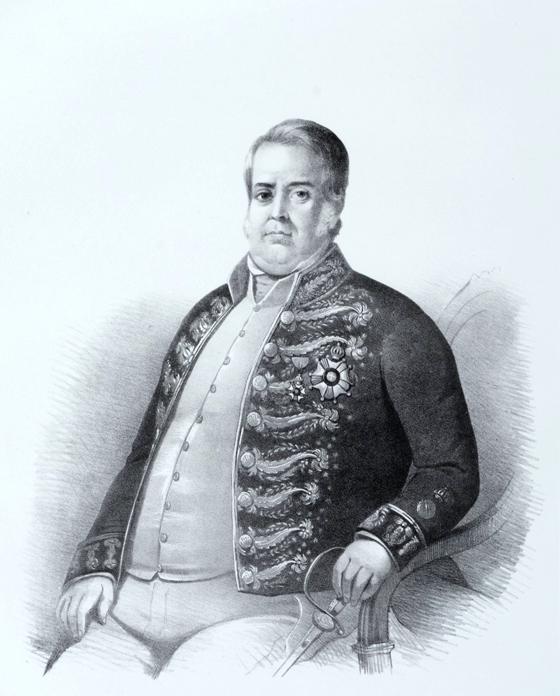
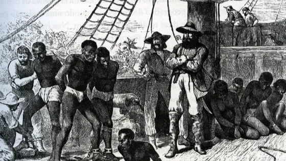

Década de 1840

Tarifa Alves Branco
A Tarifa Alves Branco foi uma reforma tributária implementada no Brasil em 1844, durante o reinado de Dom Pedro II, com o objetivo de proteger a indústria nacional. Ela foi nomeada em homenagem ao ministro da Fazenda da época, Barbosa de Almeida Alves Branco, que propôs a medida. A tarifa consistia no aumento das taxas de importação de produtos estrangeiros, tornando mais caros os produtos industriais importados, como tecidos, ferramentas e máquinas. O objetivo era incentivar o desenvolvimento da indústria brasileira, promovendo a produção interna e reduzindo a dependência de produtos estrangeiros. A medida teve impacto positivo na indústria nacional, mas também gerou críticas, especialmente entre os comerciantes que dependiam das importações.

Lei Aberdeen
A Lei Bill Aberdeen foi uma lei inglesa promulgada em 1845 que permitia à Marinha Real britânica monitorar o Atlântico Sul e prender navios negreiros. A lei autorizava a captura e apreensão de navios suspeitos de transportar escravos; concedia ao Reino Unido o direito de apreender embarcações negreiras em águas internacionais ou em portos estrangeiros e permitia que a Marinha Real britânica julgasse os comandantes dos navios negreiros. A Lei Bill Aberdeen foi uma forma de pressionar o fim do tráfico negreiro, que trazia milhares de africanos para o Brasil anualmente. Como o Brasil era um dos principais destinos do tráfico negreiro, a lei ajudou a reduzir significativamente a prática.